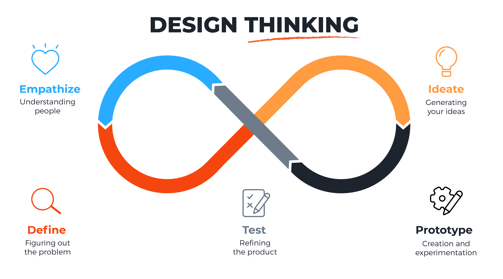
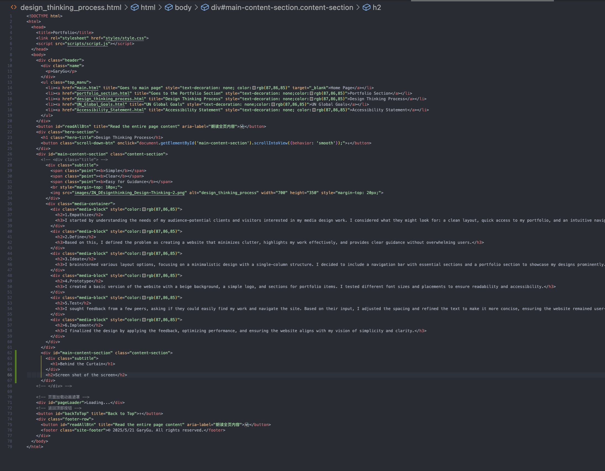
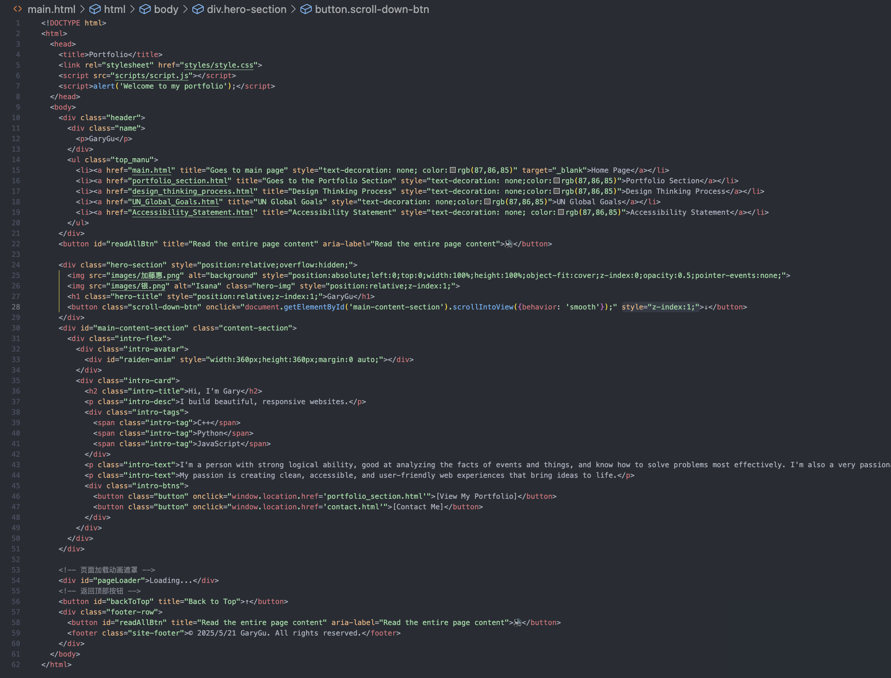
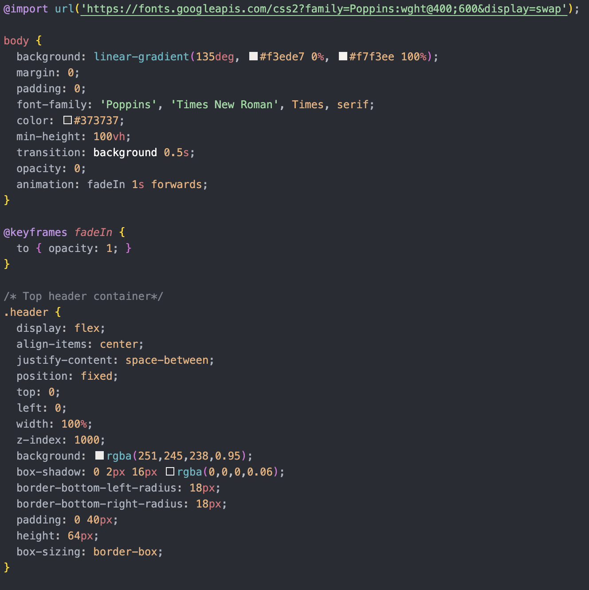
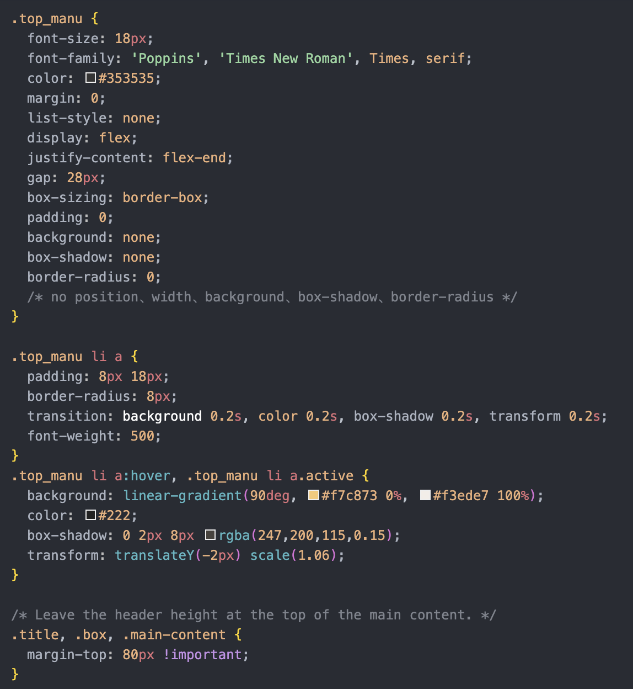
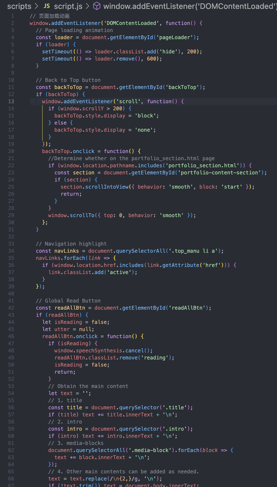
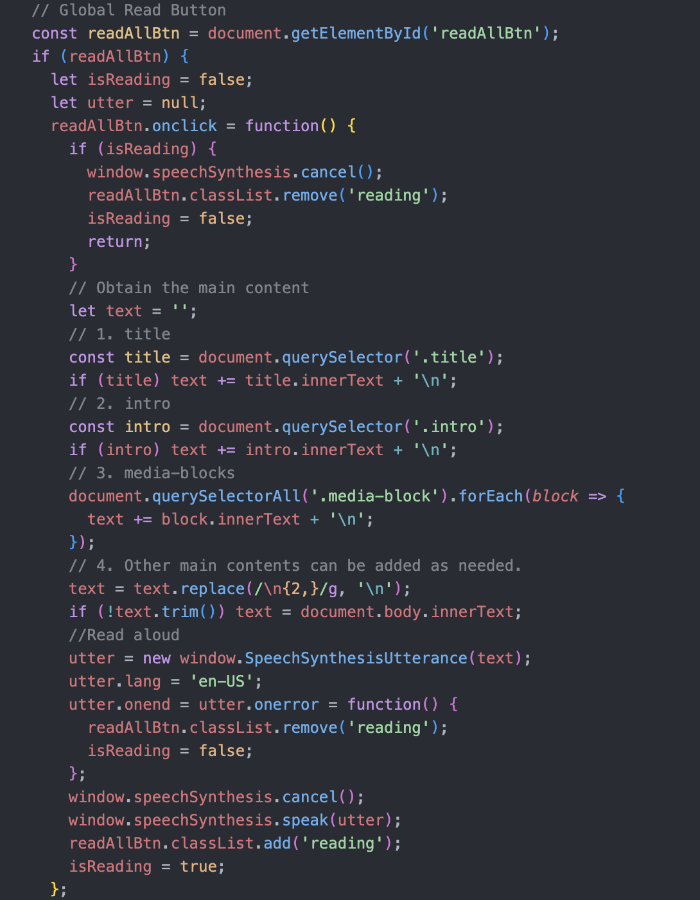

Simple
Clear
Easy for Guidance








One of the most challenging parts I encountered during the coding process was working with CSS and JavaScript. While the structure of the HTML was quite smooth for me to build, I struggled with CSS formatting at first. I was unfamiliar with many of the properties and how they affect the layout on a webpage. For example, something as simple as adjusting the position of a title took me several tries because I didn't yet understand how different positioning rules work.
When it came to JavaScript, things became even harder. I had no prior experience with it, and the initial lessons only covered basic concepts. I wanted to add a "Back to Top" button that smoothly scrolls the page to the top when clicked. At first, I tried using
window.scrollTo(0,0)
, but it jumped to the top instantly. I learned I needed to use behavior: 'smooth' for smooth scrolling, so I wrote:
section.scrollIntoView({ behavior: 'smooth', block: 'start' });
However, this still didn't work because I forgot to add the event listener correctly. I continuously tested and reviewed the documentation until I realized that I needed to wrap it in a function and bind it to the button's click event. After debugging and trying, I finally achieved the functionality. This small feature helped me understand the interaction between JS functions and DOM events.
JavaScript Html Css
Throughout the process of creating my website, I experienced both smooth progress and unexpected challenges. Structuring the page with HTML was relatively easy for me, as I quickly understood how to organize content using tags like <header>, <section>, and <footer>. The layout made sense, and building the framework gave me confidence early on.
However, things became more difficult when I started working with CSS and JavaScript. At the beginning, I struggled with CSS because I had little idea how properties like margin, padding, and position worked together. For example, it took me many attempts just to correctly position the page title. I had to try different combinations of relative, absolute, and flexbox before finally achieving the result I wanted. These challenges taught me the importance of precision and testing when working with stylesheets.
JavaScript was even more challenging. I had never used it before, and I realized quickly that the basics I learned weren't enough to create the interactive effects I wanted. One specific example was trying to make a "Back to Top" button with smooth scrolling. At first, I just used window.scrollTo(0,0), but it made the page jump instantly. After research and trial-and-error, I learned to add behavior: 'smooth' for better user experience. I also had to learn how to use addEventListener properly to make the button work when clicked. Debugging this small feature was frustrating but rewarding—it was the first time I felt like I had real control over a webpage's behavior.
From this experience, I learned much more than just writing code. I gained a strong understanding of how websites are structured, how different languages play specific roles, and how to improve a site's appearance and functionality. I now see how small design choices, like spacing and animation, can greatly affect the overall user experience. I also learned to independently find solutions and break down problems into smaller steps, which is very helpful for future projects.
This project showed me that web development requires patience, creativity, and continuous learning. I'm proud of how far I've come from knowing nothing about JavaScript to writing my first working function. I look forward to continuing to improve my skills and building more advanced, interactive websites in the future.